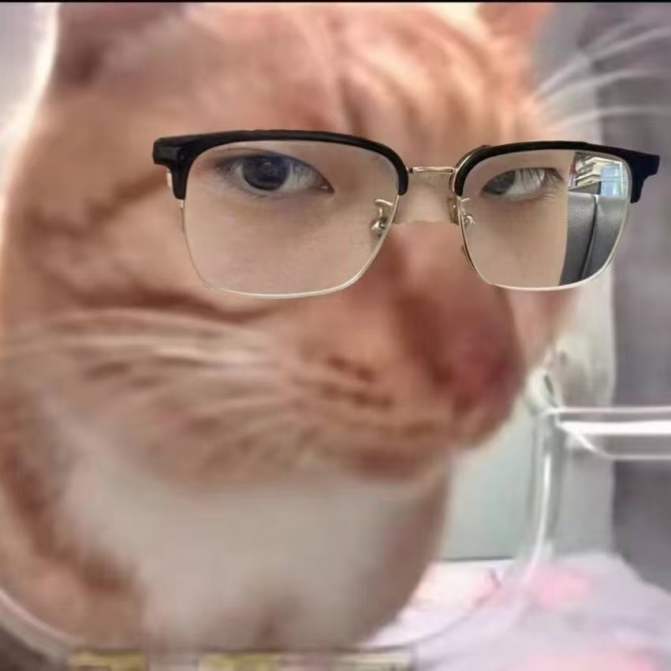
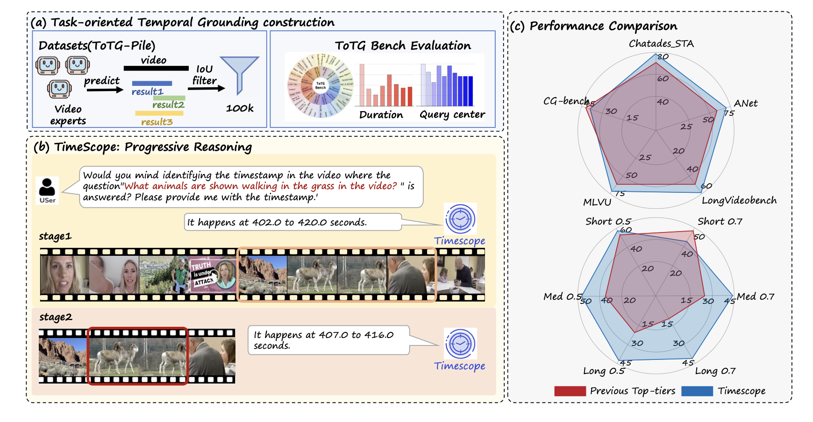
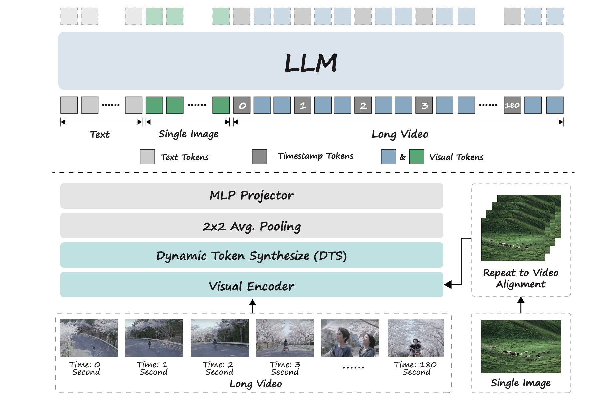
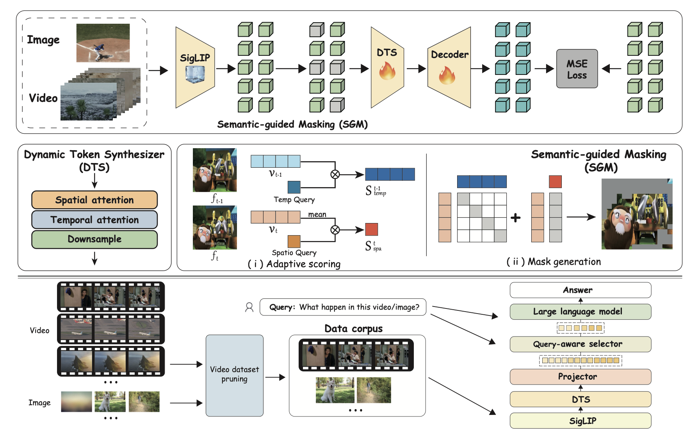

Xiangrui Liu (刘祥睿)Undergraduate Student @ Beijing University of Chemical TechnologyResearch Intern @ Beijing Academic of Artificial Intelligence |
 |

Biography
Hello, I am Xiangrui Liu, a senior undergraduate student at Beijing University of Chemical Technology, I am currently working as a research intern at Beijing Institute of Artificial Intelligence, supervised by Prof. Zheng Liu, and previously served as a research intern at Shanghai Jiao Tong University under the supervision of Prof. Bo Zhao. I am dedicated to exploring Video MLLM, especially long video understanding, temporal understanding, and spatial understanding.
News
- [06/2025] Video-XL-2 is released, try it on Video-XL-2.
- [06/2025] 🉠STI-bench accepted to ICCV 2025!
- [04/2025] Video-XL-Pro is released, try it on Video-XL-Pro.
- [12/2024] I joined Beijing Academic of Artificial Intelligence as a research intern.
- [11/2024] I joined Shanghai Jiao Tong University as a research intern.
⬆ scrollable
Publications | [My Google Scholar]
Full List
|

|
TimeScope: Towards Task-Oriented Temporal Grounding In Long Videos
Xiangrui Liu*, Minghao Qin*, Yan Shu, Zhengyang Liang, Yang Tian, Chen Jason Zhang, Bo Zhao, Zheng Liuâ€
Under Review
|
|

|
Video-XL-2: Towards Very Long-Video Understanding Through Task-Aware KV Sparsification
Minghao Qin*, Xiangrui Liu*, Zhengyang Liang*, Yan Shu, Huaying Yuan, Juenjie Zhou, Shitao Xiao, Bo Zhao, Zheng Liuâ€
Technical Report
|

|
STI-Bench: Are MLLMs Ready for Precise Spatial-Temporal World Understanding?
Yun Li, Yiming Zhang, Tao Lin, Xiangrui Liu, Wenxiao Cai, Zheng Liu, Bo Zhaoâ€
ICCV2025
|
|

|
Video-XL-Pro: Reconstructive Token Compression for Extremely Long Video Understanding
Xiangrui Liu*, Yan Shu*, Zheng Liu*, Ao Li, Yang Tian, Bo Zhaoâ€
Under Review
|